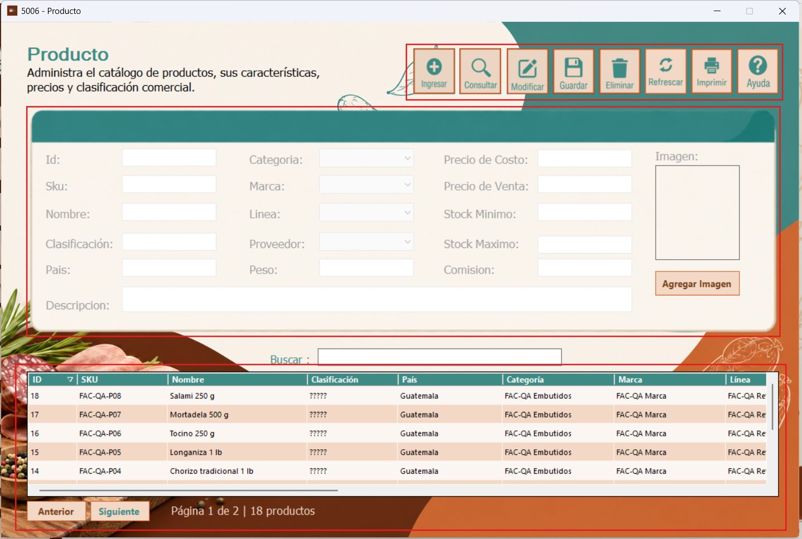
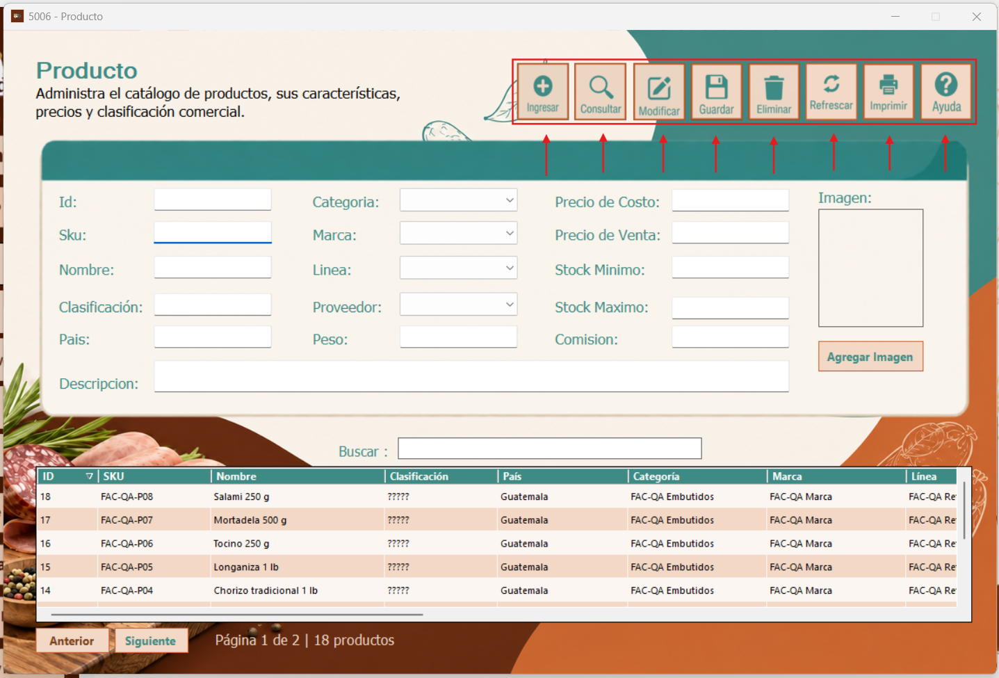
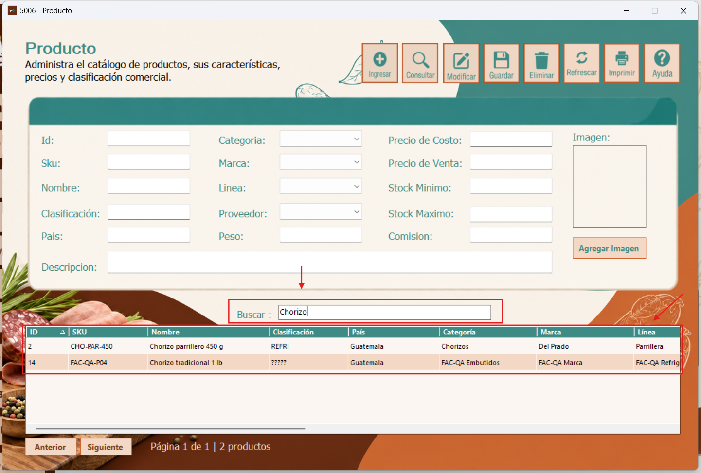

El formulario Producto permite administrar el catálogo de productos de la empresa, incluyendo sus datos generales, características, clasificación comercial, precios y existencias mínimas y máximas. También permite consultar los productos registrados desde el listado inferior.
Al abrir la ventana 5006 - Producto, se presenta una barra de botones en la parte superior para realizar las operaciones de mantenimiento. En el centro se encuentra el formulario con los campos del producto y el espacio destinado a su imagen. En la parte inferior aparecen el campo Buscar, la tabla de productos registrados y los botones Anterior y Siguiente, que permiten desplazarse entre las páginas del listado.
Esta distribución permite consultar la información de los productos y acceder a las opciones de gestión desde una misma ventana.

En la barra superior se encuentran las opciones principales del formulario. Ingresar permite iniciar el registro de un nuevo producto; Consultar permite revisar los productos; Modificar permite editar la información del producto seleccionado; Guardar registra los datos ingresados o los cambios realizados; y Eliminar permite solicitar la eliminación de un registro.
Además, Refrescar actualiza la información del listado, Imprimir da acceso a la función de impresión y Ayuda abre las instrucciones de uso del formulario. Para modificar o eliminar un producto existente, primero debe seleccionarse el registro correspondiente en la tabla.

Para comenzar un registro, presione Ingresar y complete los campos habilitados. El formulario incluye el ID, que identifica al producto; el SKU, usado como código comercial; el Nombre; la Clasificación; el País y la Descripción.
También dispone de listas para seleccionar la Categoría, Marca, Línea y Proveedor. El campo Peso describe una característica física del producto. En el área de valores comerciales se pueden ingresar el Precio de Costo, Precio de Venta, Stock Mínimo, Stock Máximo y Comisión.
A la derecha se encuentra un recuadro para visualizar la imagen del producto y el botón Agregar Imagen, que permite seleccionar una imagen para asociarla al registro. Después de revisar los datos, utilice Guardar para registrarlos.
Para localizar un producto, escriba su nombre o parte de él en el campo Buscar, situado sobre la tabla inferior. El listado permite visualizar los registros que coinciden con el texto introducido. En la captura de ejemplo se escribe Chorizo y se muestran los productos relacionados con esa búsqueda.
La tabla presenta datos como ID, SKU, Nombre, Clasificación, País, Categoría, Marca y Línea. En la parte inferior, los botones Anterior y Siguiente permiten desplazarse entre páginas cuando el listado tiene más resultados de los que caben en una sola página.
